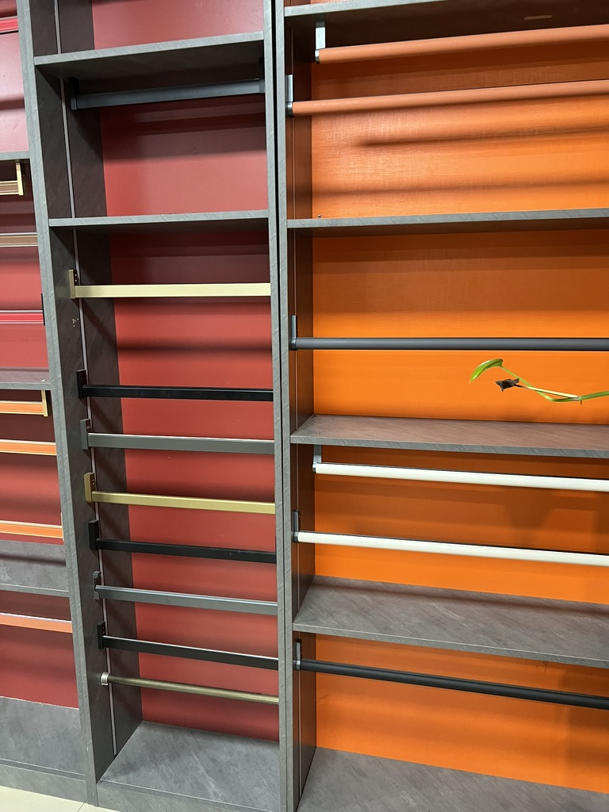

Taotao business-visit photo for finish context. It does not prove a particular product or coating claim.
A U.S. window importer receives two quotations for coated aluminum profiles. One says “AAMA 2605 finish” and costs more; the other lists a color and coating thickness. The buyer is about to approve a sample and pay a deposit. What does the first claim cover on the actual quoted profiles?
Why the claim needs a specific answer
FGIA announced updated 2026 AAMA 2603, 2604 and 2605 finish documents for organic coatings on architectural aluminum extrusions and panels. A standard name in a quote identifies a proposed requirement; it is not, by itself, a test report or evidence that an unnamed factory's shipment meets it. The buyer should specify which edition and finish system the supplier is offering.
Taotao's finish-evidence match
| Request from the seller | Match it to | Decision question |
|---|---|---|
| Profile drawing, alloy and exact part references | Purchase order and approved window configuration | Which pieces receive this finish? |
| Coating system, pretreatment, color and gloss reference, named applicator | Quotation and signed physical reference sample | Is the offer specific enough to reproduce? |
| Documented test scope and applicable AAMA edition for the offered coating | Claim on the quote | Does the evidence cover the process and material being ordered? |
| Agreed batch inspection, appearance acceptance and change-notice method | Production order and pre-shipment check | How will the buyer recognize a change or mismatch? |
If a seller claims that an applicator is verified, check the named company and scope in FGIA's Verified Components directory. A directory listing is still not proof for a particular production lot. Request the relevant, authorized supporting documents and clarify any scope gap with the issuing body.
How to decide before deposit
Compare the signed finish reference against the quote, drawing and proposed production route. Ask who performs coating, what records will be available for the actual batch, and who approves a material or applicator substitution. The Taotao window and door range is a starting point for defining an inquiry; model-specific finish and compliance evidence is to be verified.
Continue when the quoted profiles, named process, reference sample and acceptance records agree. Pause when “AAMA 2605” appears only as an unqualified sales phrase. Escalate to the project specifier or independent coating specialist when the specified edition or claimed test scope cannot be reconciled. A showroom photo, including the photo above, does not establish compliance for an order.
Katherine's experience reviewing manufacturers informs this document-to-process check. It does not provide private financial information or a formal technical certification.